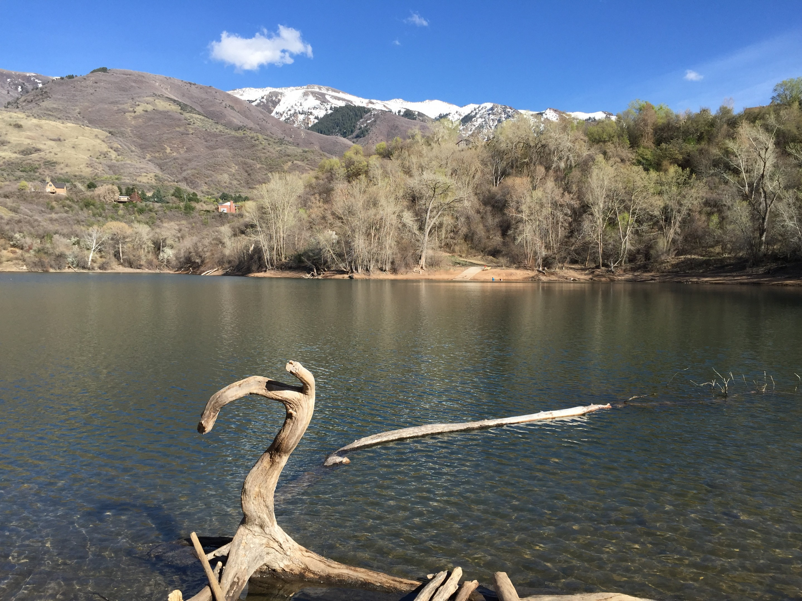
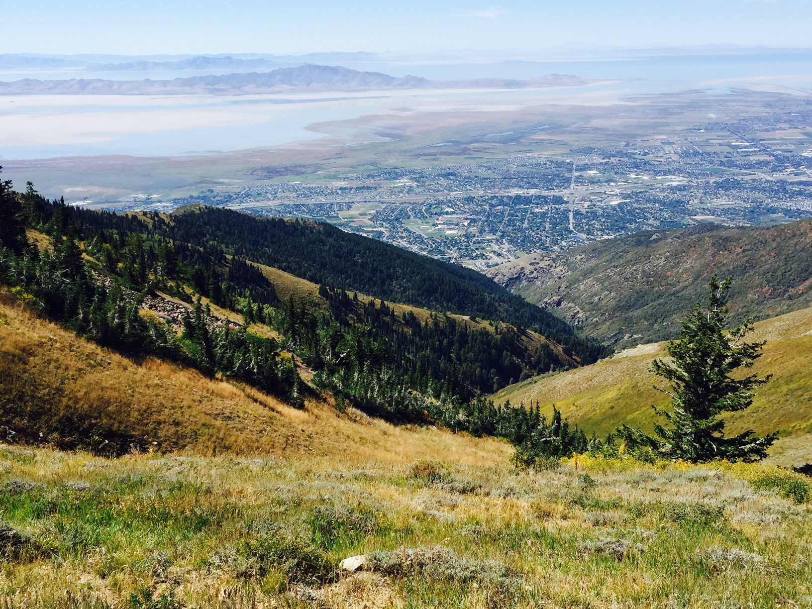
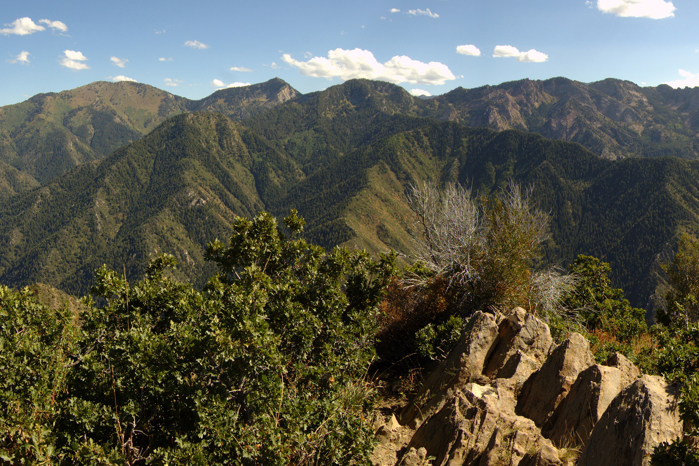
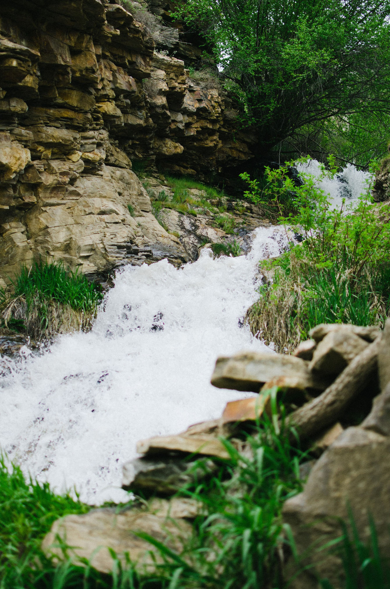
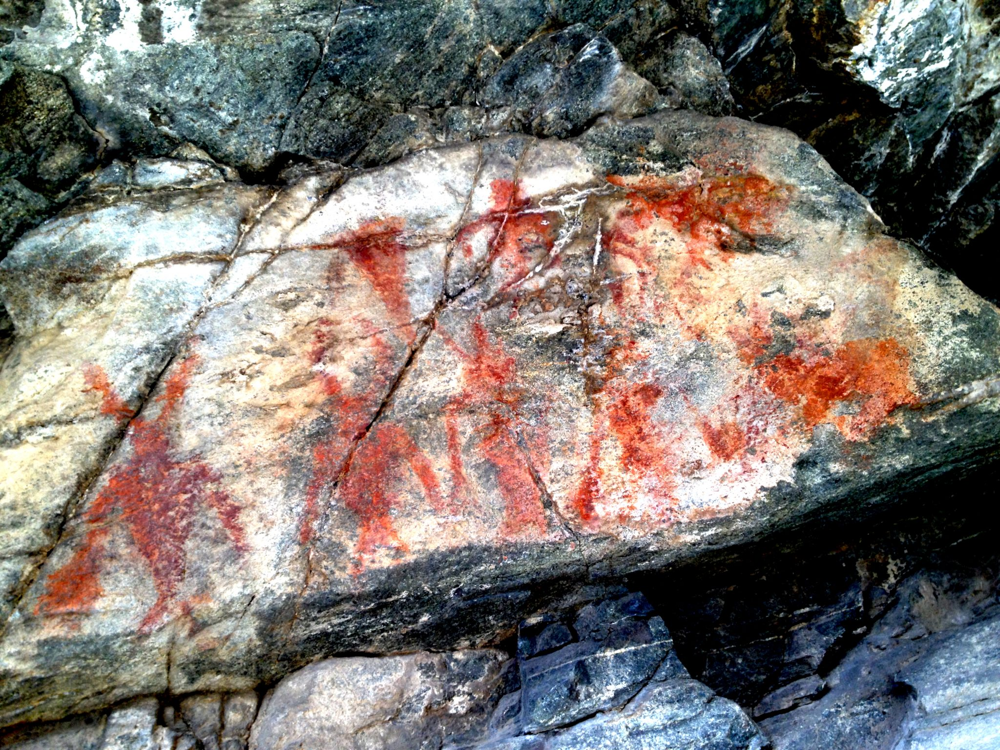

Jordan River
The Jordan River is 51.4 miles long and has four of Utah's six largest sities bordering it including; Salt Lake City, West Valley City, West Jordan, and Sandy. It is an important resting spot for migrating aviery and has more than 200 species of birds that visit it.
Kays Creek
Situated near Layton. Kays Creek runs right by Hill Air Force Base and has a parkway trail to follow!
Bair Creek
This creek runs along the Bair Canyon in the Rocky Mountains. A hiking trail also goes through the canyon. This creek is also known as "Baer Creek".

Farmington Creek
Located in Farmington, this creek has a 20ft tall waterfall at its peak and has a trail to follow that leads right to it!
Mill Creek
This creek is situated in Bountaful. It has a trail that acompanies it and the area is good for camping, hiking, and other outdoor activites.
Davis Creek
This creek has a trail that loops around near Farmington. It goes up a canyone with an area of waterfalls at the mouth of the canyon.
Rudd Creek
A creek in Farmington that has a 2.1 mile out-and-back trail! It flows from a canyon in the Wasatch Front.
Parrish Creek
This creek is located near Centerville. It has a few waterfalls along with Native American pictographs that can be viwed.